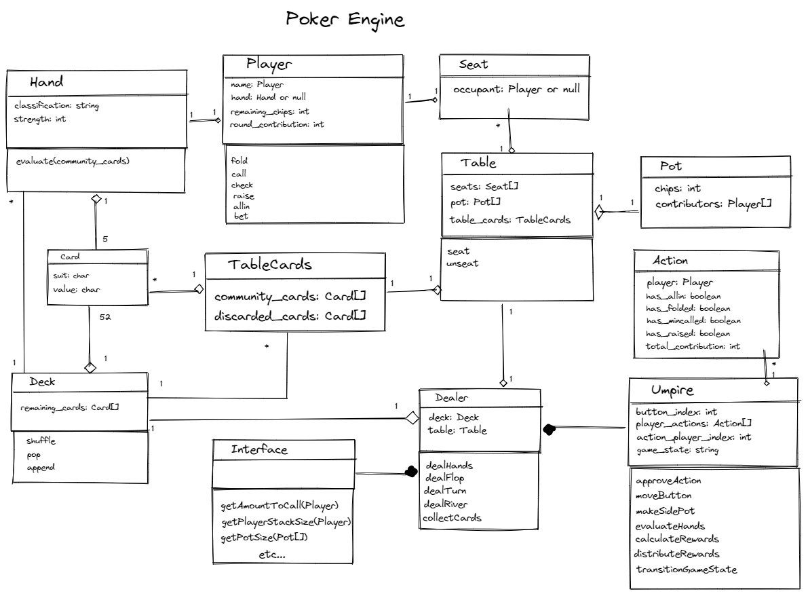
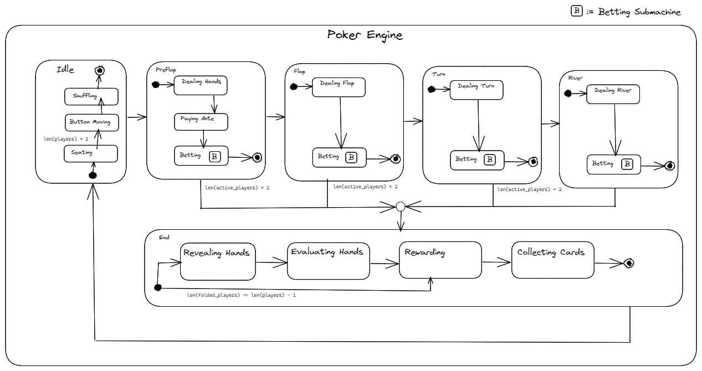

Object-Oriented Design
Examples of modelling tools for Object-Oriented Design
Class Diagrams
A class is a template for an object, so an object is an instance of a class. They consist of attributes and methods. An attribute is another name for a variable that is class or object-scoped, and is sometimes constrained to a selected datatype. A method is a function that is called by a class or object, and may require parameters, alter class or object states, and return information. Attributes and methods may be qualified as private or public too.
Classes may be structurally related to each other through composition, abstraction, inheritence and aggregation. Inheritence is the provision of attributes and methods from one class to another to extend the parent classes template. Abstraction is a shared specification that outlines which attributes and methods any of it's derived classes must have. Aggregation is the assignment of objects to a classes' attributes, that can exist independently to the class. Composition on the other hand, is the assignment of objects to a classes' attributes, that can't exist independently.
A class diagram is a object-oriented design for software, portraying classes and details amongst them.
Example
An example of a class diagram for a poker engine.
State Machine Diagrams
A state is a period of time within an objects lifecycle and a transition is a change between states. Transitions are caused by a triggering event, with a guardian being a boolean condition that must be true for a transition to occur. An action is an excution of instructions, that happens on entry or on exit of a state; a part of a transition. A state machine is a graph of an objects states and transitions, and a state machine diagram is a model of a state machine including triggering events, guardians and actions.
Example
An example of a state machine diagram for a poker engine.
End of Module Reflection
During the module, I gained an appreciation for class and state diagrams especially. Class diagrams capture the structure of OOP software through a bijection, and simplify the transition from software design to a software's implementation. Class diagrams are cheaper to edit than an implementation.
It's less obvious how state diagrams connect to OOD, but I consider them as the description of a subset of objects that follow the state design pattern. Having this explicit subsystem gives control to how the software reacts in different states, and helps encapsulate software behaviour.
While making the actual diagrams showcased above, I learnt empirically that UML is useful for OOD, because I was able to improve upon the design of one of my past home-projects, by visually identifying inconsistencies in the old version. Funny enough, if anybody disgrees that the new design I presented was an improvement, then atleast there is now something tangible to attach comments to, that I can iteratively improve upon. I'm glad to have gained experience in these OOD tools for those reasons.
My next step in OOD is to explore the larger architectures that govern the arrangement of objects.